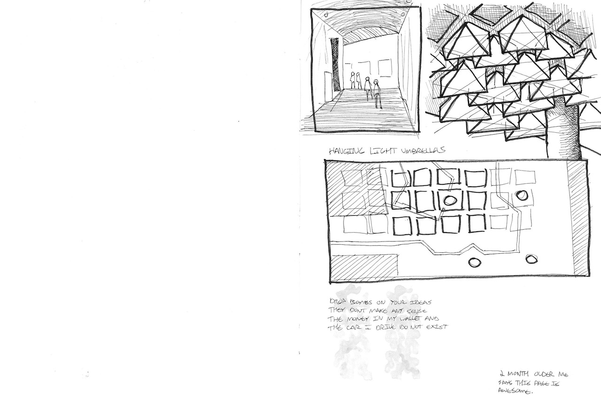
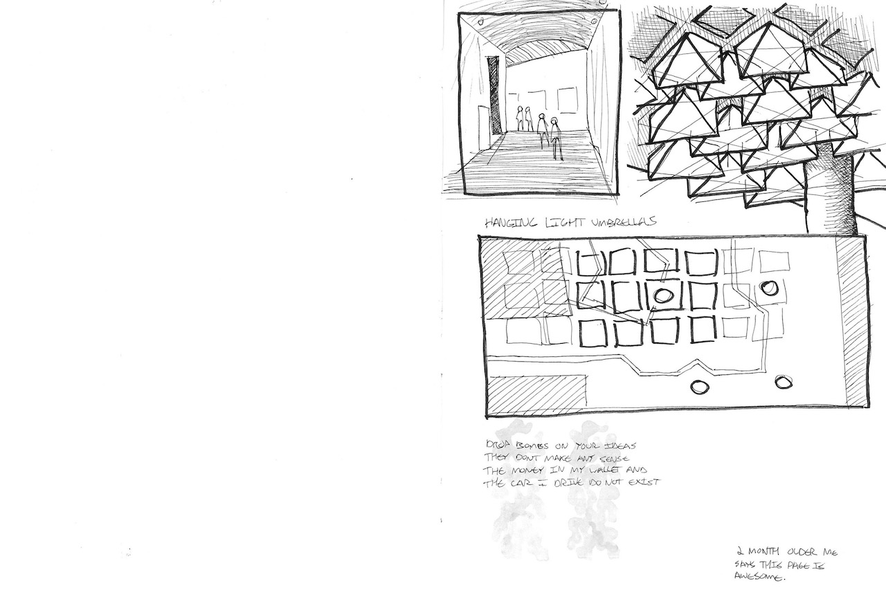
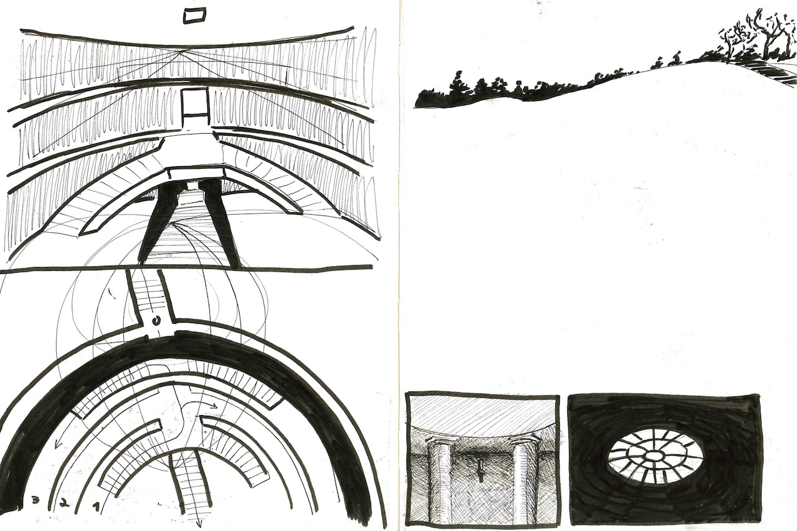
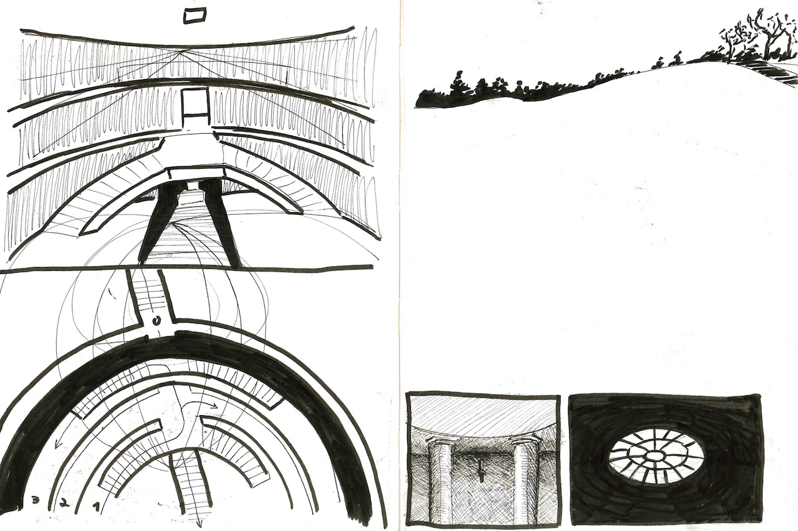

Here are some excerpts from my architecture sketchbook. I decided not to erase anything while making these drawings, and I think it makes the results more interesting than they would have been otherwise.


 



 
